iPhone中安装TrollStore
- 有多种安装方式
- 通过
浏览器安装TrollStore- iPhone中，用Safari打开链接：https://api.jailbreaks.app/troll
- 具体步骤详见
- 用
Sideloadly安装TrollStore- 对应安装包：
TrollStore Installer IPA=TrollInstaller.ipa- 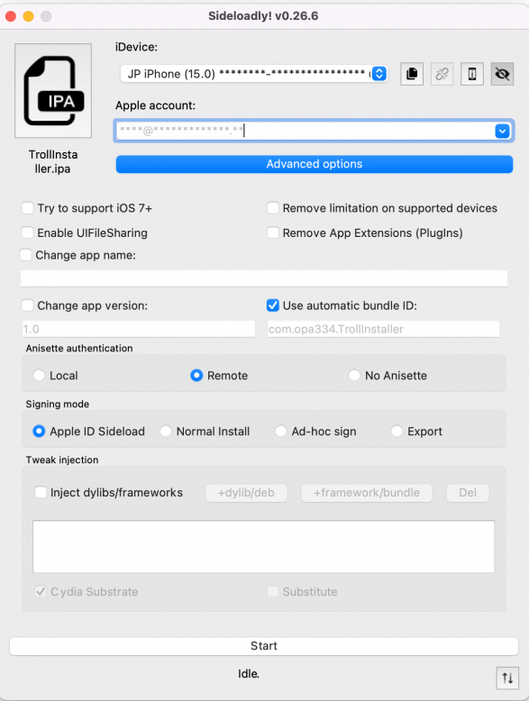
- 对应安装包：
- 通过
此处最后的选择是：
- 没用：Sideloadly去安装TrollStore的ipa
- 因为TrollStore的ipa是旧版本，而另外缺找不到最新版本的TrollStore的ipa
- 估计是：安装了旧版本TrollStore后，也可以通过OTA升级到最新版，但是懒得去弄
- 因为TrollStore的ipa是旧版本，而另外缺找不到最新版本的TrollStore的ipa
- 改用：参考官网github文档，去用Safari浏览器去安装TrollStore
iPhone11中用Safari浏览器去安装TrollStore
核心步骤
iPhone->Safari浏览器-》打开地址 https://api.jailbreaks.app/troll -》 “在iTunes中打开此页” 的弹框中：打开 -》“jailbreak.app想要安装TrollHelper”的弹框中：安装 -》桌面出现app图标JB，显示：正在安装 ->桌面上新增app：GTA Car Tracker -》点击进入GTA Car Tracker-》app标题是TrollStore Helper -》点击Install TrollStore-》稍等一会，iPhone重启-》桌面上出现：TrollStore
详细解释
- iPhone->Safari浏览器-》打开地址 https://api.jailbreaks.app/troll
- -》 “在iTunes中打开此页”？弹框中：打开
- -》“jailbreak.app想要安装TrollHelper”的弹框中：安装
- -》桌面出现app图标JB，显示：正在安装
- 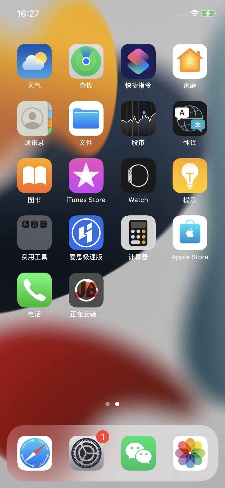
- ->桌面上新增app：GTA Car Tracker
- -》点击进入GTA Car Tracker-》app标题是TrollStore Helper
- 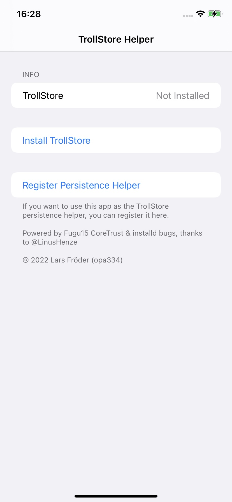
- -》点击Install TrollStore-》稍等一会，iPhone重启-》桌面上出现：TrollStore
- 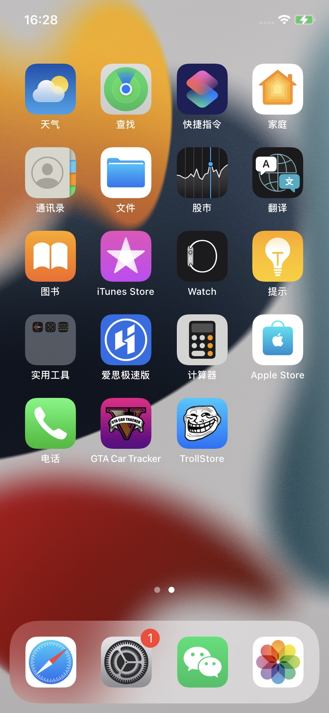
安装TrollStore后
把TrollStore设置为持续存在
在iPhone中安装了TrollStore后，为了使后续系统图标刷新等操作，不会导致TrollStore无法正常使用，比如变成User用户模式或打不开
所以需要去：
- 把TrollStore设置为持续存在
Persistence- 核心思路：找个（自己平时不用的）系统app 或 （比如此处）就用上面的
GTA Car Tracker，去设置为Persistence Helper - 具体步骤：点击
GTA Car Tracker- -》
Register Persistence Helper- 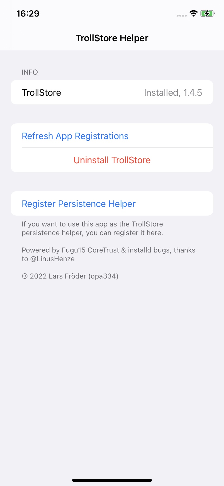
- 注册后的效果是
- 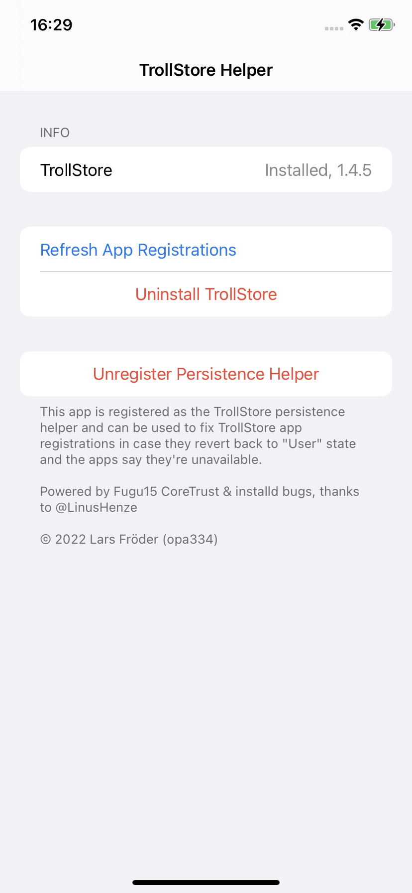
- -》
- 详细过程参考官网文档：
- 注意：
- 后续不能删除
TrollStore Helper==此处的GTA Car Tracker- 因为：上面通过GTA Car Tracker == TrollStore Helper，点击了其中的：Register Persistence Helper，意思是把GTA Car Tracker作为了一个系统的app，用于后续TrollStore的永久保持的功能，所以以后不能删除此app：GTA Car Tracker
- 后续不能删除
- 核心思路：找个（自己平时不用的）系统app 或 （比如此处）就用上面的
初始化配置TrollStore
安装完毕TrollStore后，还需要：
- 初始化配置TrollStore
- 核心步骤：TrollStore -> Settings -> Install ldid
- 详细步骤
- TrollStore-> Settings -> Install ldid
- 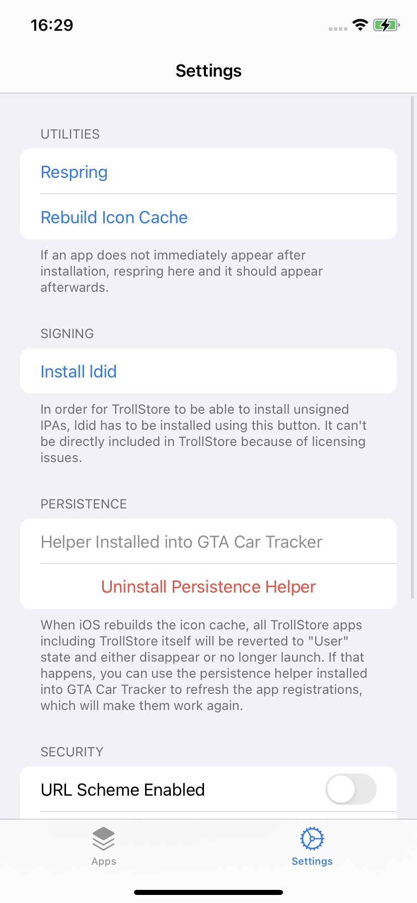
- 显示正在安装：
Installing ldid- 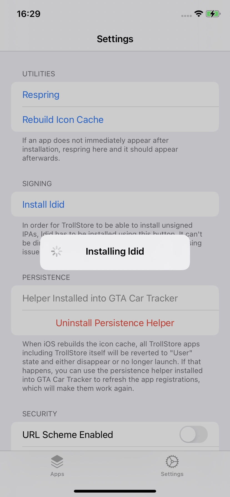
- ldid安装完毕后
- 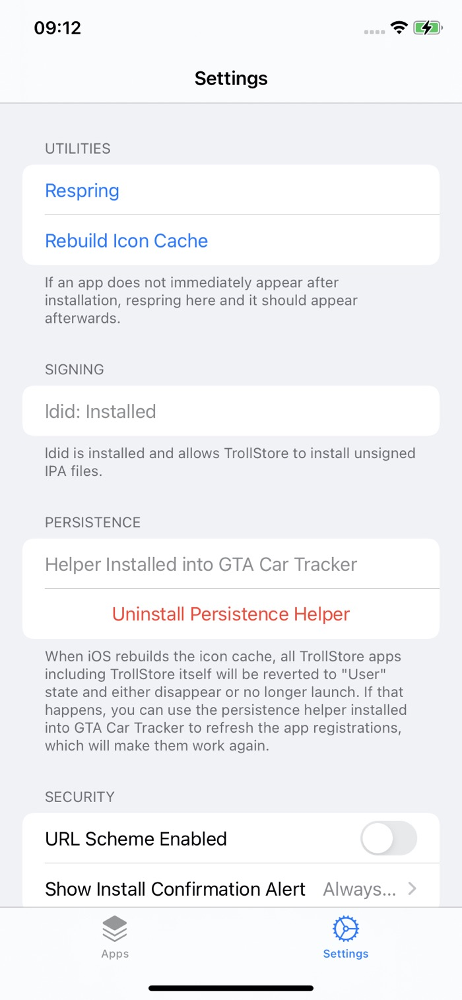
- 会看到文字提示：
ldid is installed and allows TrollStore to install unsigned IPA files
- 会看到文字提示：
- 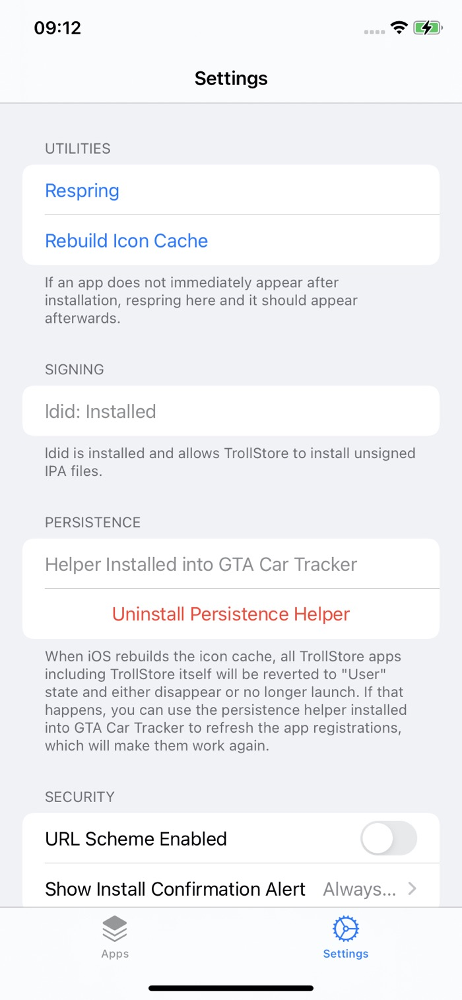
- TrollStore-> Settings -> Install ldid
常见错误
Error downloading ldid Code 1001 请求超时
如果installing ldid期间：
- 报错：Error downloading ldid Code 1001 请求超时
- 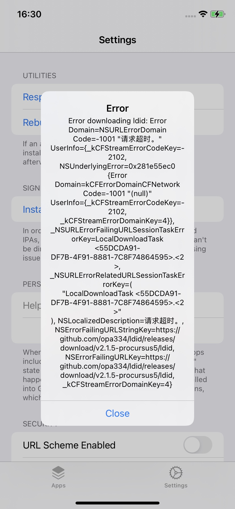
- 原因：无法访问外网（https://github.com/xxx）
- 解决办法：用Shadowrocket小火箭，加上代理，确保翻墙后可以正常上外网
- 详见
- 【已解决】给iOS 15.1的iPhone 11去翻墙科学上网安装代理
- 详见
升级TrollStore
- 升级TrollStore
- TrollStore中如果有新版本，则会有对应新版本提示
- 此处的：Update TrollStore to 1.5.0
- 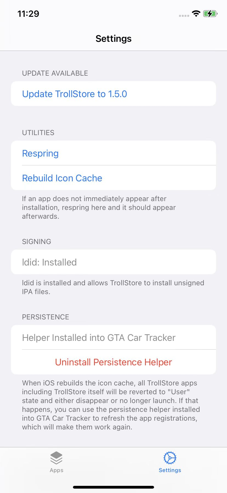
- 点击继续安装即可
- 注：同理，确保能上外网，否则会出现下载失败的情况
- 更新后：1.5.0
- 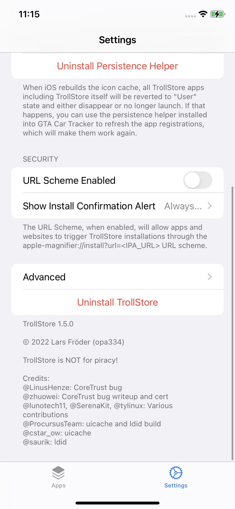
- 此处的：Update TrollStore to 1.5.0
- TrollStore中如果有新版本，则会有对应新版本提示